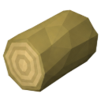
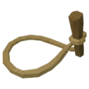

🪤
The Trapper's Trade
Huntsman Garrick teaches Hunter. Bring him what he needs to make traps, bait and a skinning bench.
| Property | Value |
|---|---|
| Quest giver | 🏹 Huntsman Garrick |
| Zone | 🌾 Ashvale |
| Quest points | 1 |
| Requirements |
Objectives
- Hand in

Birch Logs ×60 - Hand in
 Flax ×40
Flax ×40 - Hand in
 Stone ×40
Stone ×40 - Hand in
 Copper Ore ×20
Copper Ore ×20 - Hand in
 Raw Shrimp ×25
Raw Shrimp ×25
Rewards
- 🪙 2,000 coins
- 400 🪤 Hunter XP

Snare Box Trap
Box Trap Skinning Knife
Skinning Knife